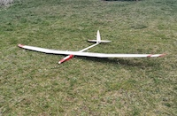

2010, HKM Space Pro, 3,35m Spannweite, Wölbklappen, mit Motor und Akku 2,6 Kg Masse.
Der Space Pro, ein Voll-GFK/AFK-Modell wurde von mir von einem, leider zu früh verstorbenen Fliegerkollegen, übernommen. Ein Rumpf mit Motor und V-Leitwerk, sowie ein Besenstielrumpf mit Kreuzleitwerk waren dabei. Hersteller dieser Wunderwaffe ist HKM Modellbau.
Der Segler hat durch die dreiteilige Fläche günstige Abmessungen und wird bei mir ebenfalls mit dem Staufenbiel Modellrucksack aufbewahrt und transportiert. Es ist in meinen Augen noch mehr Universalmodell, wie der Cappuccino, da ich bei schwachem Wind mit Motor die ersten Höhenmeter zurücklegen kann. Es kann sehr langsam, sowie sehr zügig geflogen werden. Durch das doch geringe Gewicht hält sich der Durchzug in Grenzen, was aber auch verständlich ist. Die Möglichkeit der Aufballastierung ist hier praktisch nicht gegeben, da es dafür schlicht und einfach keinen Platz gibt.
Der Space Pro ist, wie die meisten Modelle von mir, mit einer LiIo Empfängerstromversorgung ausgestattet. Dazu ist es wichtig den Stromverbrauch zu kennen, um die Längsreglerschaltung zu dimensionieren.

Als mit Elektromotor angetriebenes Modell, sollte man ebenso den Leistungsbedarf des Antriebs kennen. Da der Akku nur mit Fummelarbeit auszubauen ist kann er praktisch dauerhaft im Modell verbleiben, >17 Steigflüge sollten für einen Tag reichen, ansonsten ist es ja nur absegeln der eingeladenen und in Höhe umgesetzten Energie.
Im Frühjahr 2021 wurde der Rumpf mit dem Kreuzleitwerk so überarbeitet, dass ein kleiner Elektromotor Platz findet. Der Flieger sollte als initiales Trainingsmodell für GPS-Triangle Verwendung finden. Durch den Umbau ergibt sich eine geringere Flächenbelastung, geringfügig mehr als 30 g/dm**2.

Die Grafiken wurden mit dem kostenlosen Open-Source-Programm DataExplorer erstellt.